Transformer
-
RNN 없이
Self-Attention으로 input token 간 관계를 parrael로 train하는 Encoder-Decoder 기반 신경망 구조Self-AttentionAttention연산을 자기 자신에게 수행함- Query, Key, Value의 Vector 출처가 동일한 경우
- Query, Key, Value가 동일한 input Vector 집합에서 만들어짐
- 각 단어를 integer encoding한 후, 하나의 행렬로 합쳐서 position encoding을 원소별로 더한 Encoder에 input으로 들어갈 행렬에서 Query, Key, Value를 만듦
- Query, Key, Value가 동일한 input Vector 집합에서 만들어짐
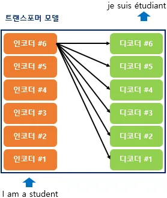
- Encoder와 Decoder를 각각 n개씩 쌓아 구성
- 기존 seq2seq은 각각 하나의 Encoder와 Decoder를 가짐
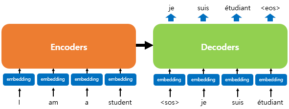
- 기존 seq2seq은 각각 하나의 Encoder와 Decoder를 가짐
- RNN은 사용하지 않지만, Encoder-Decoder 구조 유지
| 참고 : Attention is all you need
-
기존 Encoder-Decoder 구조를 따르면서도, Attention만으로 구현한 모델
- RNN을 사용하지 않고, Encoder-Decoder 구조 설계
-
seq2seq 모델의 한계
- Encoder가 input 시퀀스를 하나의 Vector로 압축하는 과정에서 일부 정보 손실
- 이를 보정하기 위해
Attention Mechanism사용- Attention만으로, Encoder와 Decoder를 구성하면 어떨까?
- 이를 보정하기 위해
- Encoder가 input 시퀀스를 하나의 Vector로 압축하는 과정에서 일부 정보 손실
-
주요 Hyperparameter
- : Encoder와 Decoder에서 정해진 input과 output 크기, Embedding Vector 크기
- : Encoder와 Decoder를 각각 layer라고 생각했을 때, 총 Encoder와 Decoder 각각의 개수
- : Attention 분할 개수. 병렬로 Attention을 수행하고 결과값을 하나로 합침
- :
Transformer내부 Feed-Forward 신경망의 hidden layer 크기
-
Positional Encoding
-
Transformer는 단어를 순차적으로 입력 받지 않으므로, 단어의Position Information을 알려줘야 함- 각 단어의 Embedding Vector에
Position Information을 더해 모델의 inpu으로 사용 →Positional Encoding - RNN은 단어를 순차적으로 입력 받으므로, 각 단어의
Position Information을 가질 수 있어, NLP에 유리함
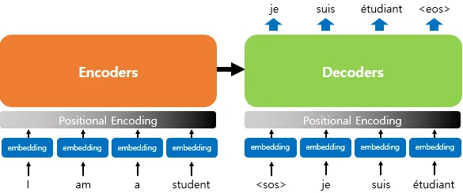
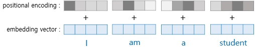
- Embedding Vector에
Positional Encoding이 더해지는 과정
- 각 단어의 Embedding Vector에
-
-
Transformer는 값을 Embedding Vector에 더해, 단어의 순서 정보를 넣음 - : input 문장에서의 Embedding Vector
- : Embedding Vector 내 차원의 index
- index가 짝수일 땐, 사용
- index가 홀수일 땐, 사용
- :
Transformer의 모든 layer의 output 차원을 의미하는 parameter
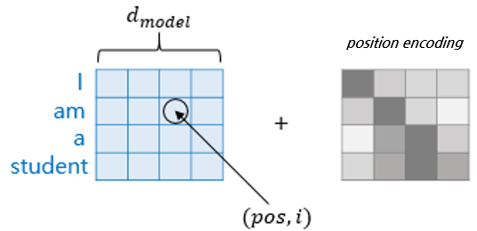
-
-
-
Attention
Transformer에 3가지의Attention을 사용
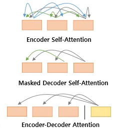
-
Encoder Self Attention- input 문장의 각 token이 문장 내 모든 token을 참고해 context가 반영된 표현을 만드는 연산
-
Masked Decoder Self AttentionDecoder의 각 token이 미래 token을 보지 못하고, 현재까지 생성된 token만 참고해 다음 token을 예측하도록 하는 연산
-
Encoder-Decoder Attention- Query가 Decoder Vector
- Key, Value가 Encoder Vector
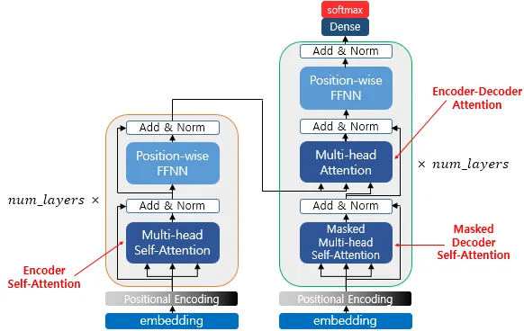
-
-
Encoder
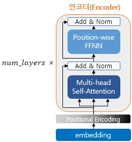
- 하나의
Encoder층은, 2개의Sublayer로 나눠짐-
Multi-head Self Attention- parallel
Self Attention
- parallel
-
Position-wise Feed-Forward Neural Network- 일반적인 FFNN
-
- 하나의
-
Self Attention in Encoder
- Q, K, V가 전부 동일
- Q, V, K : input 문장의 모든 단어 Vectors
- 이점
- input 문장 내 단어들끼리, 유사도를 구해 각 단어가 서로 연관되었을 확률이 높다는 것을 찾음
-
Q, K, V Vector 얻기
- 각 단어 벡터들로부터 Q Vector, K Vector, V Vector를 얻음
- Encoder의 초기 input인 의 차원을 가지는 단어 vector를 사용해 Self Attention을 수행하지 않음
- QKV Vector의 차원 크기 :

- 각 weight 행렬의 크기 :
- train 과정에서 학습
- 각 단어는 각각의 QKV Vector를 가짐
- 각 단어 벡터들로부터 Q Vector, K Vector, V Vector를 얻음
-
Scaled Dot-Product Attention
- 기존 Attention Mechanism과 동일
- 각 Q Vector는 모든 K Vector에 대해 Attention Score & Attention Distribution을 구함
- 모든 V Vector를 가중합해 Attention Value(Context Vector)를 구함
- 모든 Q Vector에 대해 반복
-
- Dot-Product Attention Function을 특정값으로 Scaling
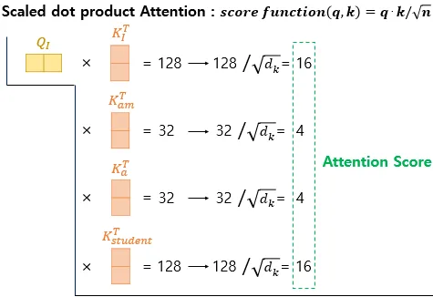
단어 ‘I’에 대한 Q Vector가 모든 K Vector에 대해 Attention Score를 구하는 과정 시각화. (단, I, am, a, student는 각각의 token이고, 값은 임의의 값임)
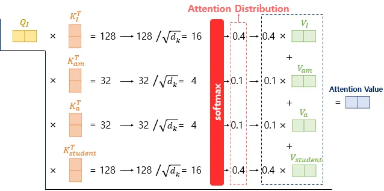
- Attention Score에 Softmax Function을 적용해 Attention Distribution을 구하고, 각 V Vector와 가중합해 Attention Value를 구함
- 모든 Q Vector에 대해 과정 반복
- Dot-Product Attention Function을 특정값으로 Scaling
- 기존 Attention Mechanism과 동일
-
행렬 연산으로 일괄 처리
- 앞선
Scaled Dot-Product Attention을 Vector가 아닌, 행렬 연산으로 일괄 계산- 문장 행렬에 가중치 행렬을 곱해, QKV 행렬을 구함
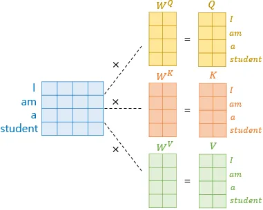
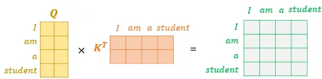
Attention Score Matrix
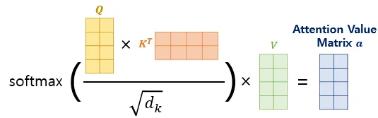
- 각 단어의 Attention Value를 모두 갖는 Attention Value Matrix가 결과로 반환
- 문장 행렬에 가중치 행렬을 곱해, QKV 행렬을 구함
- 앞선
-
Multi-head Attention
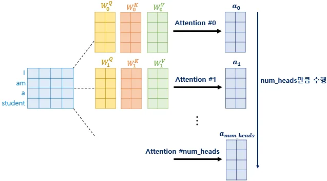
- 의 차원을 가진 단어 Vector를 Attention하지 않고, 차원을 축소시킨 Vector로 Attention을 수행하는가?
- 논문의 연구지는 여러 번의 Attention 연산을 parallel로 수행하는 것이 더 효과적이라고 판단
→ 의 차원을 개로 나누어 parallel로 Attention 수행-
- 이때 각각의 Attention Value Matrix
- 값들은 Attention Head마다 상이
-
- 서로 다른 시각으로 정보를 수집
- 논문의 연구지는 여러 번의 Attention 연산을 parallel로 수행하는 것이 더 효과적이라고 판단
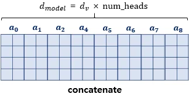
- parallel Attention 이후 모든 Attention head를 Concatenate
- : 각 Attention Head에서 Value Vector의 차원 크기
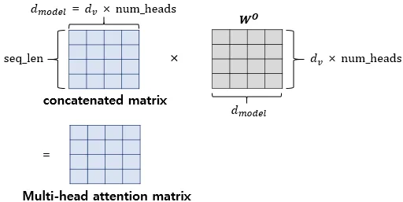
- : 각 Attention Head에서 Value Vector의 차원 크기
- Concatenate한 행렬에 를 곱한 값이 Multi=Head Attention Matrix
- Encoder의 input으로 들어온 행렬의 크기가 유지됨
- : Multi-Head Attention 마지막에 곱해지는 Linear layer의 weight 행렬 (O : output)
- 의 차원을 가진 단어 Vector를 Attention하지 않고, 차원을 축소시킨 Vector로 Attention을 수행하는가?
-
Multi-head Attention 구현
- 에 해당하는 크기의 Dense layer를 지나게 함
- 만큼 split
- Scaled Dot-Product Attention
- 각 Head들 Concatenate
- Dense layer를 지나게 함
-
Padding Mask
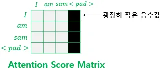
- input 문장에
<pad>token이 있는 경우, Attention에서 제외하기 위한 연산<pad>: 문장 길이를 맞추기 위해 추가한 padding<pad>가 있는 열 전체 masking- 해당 위치에 매우 작은 음수값(≒ -∞) 대입
→ Softmax Function을 지나면, 해당 위치 값이 0
- 해당 위치에 매우 작은 음수값(≒ -∞) 대입
- input 문장에
-
Position-wise FFNNEncoder와Decoder에 공통적으로 있는 Sublayer- FFNN과 동일
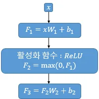
- FFNN과 동일
- : Mutli-head Attention의 최종 output 행렬. 크기는
- : 동일한 Encoder layer 내에선 같은 값
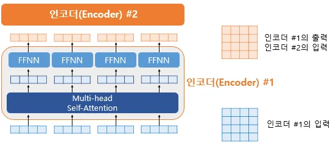
- input 행렬 크기 보존
-
Residual Connection&Layer Normalization
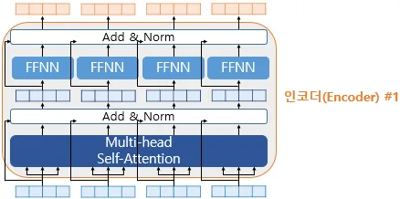
Add & Norm- 2개의 sublayer를 가진 Encoder에 추가적으로 사용하는 기법
Add:Residual ConnectionNorm:Layer Normalization
-
Residual Connection
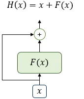
- :
Transformer의 sublayer. 입력 와 에 대한 어떤 함수
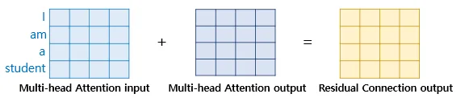
| 참고 : Deep Residual Learning for Image Recognition
- :
-
Layer Normalization-
- :
Residual Connection,Layer Normalization연산을 수행한 output 행렬
- :
- tensor의 마지막 차원에 대해, 평균과 분산을 구하고 정규화해 학습을 도움
-
tensor의 마지막 차원 :
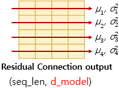
-
방향으로 평균 과 분산 을 구함
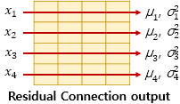
-
Layer Normalization을 수행한 후에 Vector 는 라는 Vector로 정규화 -
- 평균과 분산을 통해 Vector 정규화
-
는 Vector
-
평균 과 는 Scalar
-
- Vector 의 각 차원을 라고 했을 때, 정규화
- : 분모가 0이 되는 것을 방지하는 값
- Vector 의 각 차원을 라고 했을 때, 정규화
-
-
- 최종 정규화 수식
- : 1로 초기화된 Vector
- : 0으로 초기화된 Vector
| 참고 : Layer Normalization
- 평균과 분산을 통해 Vector 정규화
-
-
-
From Encoder To Decoder
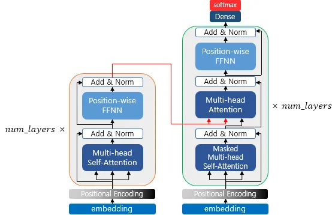
- 만큼의 layer 연산을 순차적으로 수행한 뒤, 마지막 layer의 Encoder의 output을 Decoder에 전달
- Decoder도 만큼의 연산을 함
- Encoder가 보낸 output을 각 Decoder layer 연산에 사용
-
First Sublayer in Decoder:Self Attention&Look-Ahead Mask
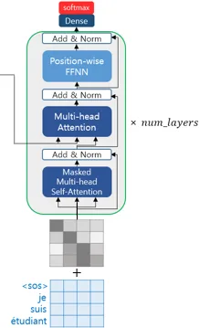
-
Embedding layer와
Positional Encoding을 거친 후, 문장 행렬 입력 -
train 중
Teacher Forcing사용 -
문제
-
seq2seq의 Decoder는 RNN 계열로 input 단어를 매 시점마다 순차적으로 입력 받으므로, 현재와 이전 시점에 입력된 단어들만 참고할 수 있음
-
Transformer는 문장 행렬을 입력 받으므로, 현재 시점의 단어를 예측하고자 할 때, 미래 시점 단어까지 참고 가능
→ 현재 시점에서 예측 시 미래 시점 단어를 참고하지 못하게look-ahead mask도입- layer마다 문장 전체 행렬 1회 입력
-
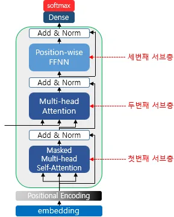
Look-Ahead Mask-
Decoder의 1번 Sublayer에서 이뤄짐 -
Attention Score 행렬에 masking
Padding Mask를 포함하는 개념
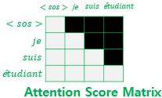
-
Transformer에는 총 3가지 Attention 존재Encoder의Self AttentionPadding Mask사용
Decoder첫 번째 Sublayer의Masked Self AttentionLook-Ahead Mask사용Padding Mask를 포함
Decoder두 번째 Sublayer의Encoder-Decoder Self AttentionPadding Mask사용
-
-
-
Decoder의 2번째 Sublayer :Encoder-Decoder Attention- Query가
Decoder, KeyValue는Encoder행렬- Self Attention이 아님
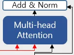
KeyValue :Encoder로부터 오는 빨간색 화살표
Query :Decoder의 첫번째 Sublayer output 행렬
- Self Attention이 아님
- Query가
-
Learning Rate
- Learning Rate Scheduler : train 진행 상황이나 epoch에 따라 Learning Rate를 자동으로 조절해 train을 안정화하고, 더 나은 최적점에 수렴하도록 돕는 기법
- : Optimizer가 parameter를 업데이트하는 진행 횟수
-
- 를 정함
- 보다 크면 learning rate를 linear으로 증가
- 에 도달하면 learning rate를 감소
- 를 정함
- Q, K, V가 전부 동일
Transformer Chatbot Tutorial
| 참고 : https://github.com/ukairia777/tensorflow-transformer
Multi-head Self Attention for Text Classification
| 참고 : https://wikidocs.net/103802